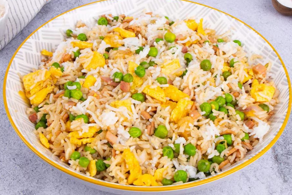

Cantonese Rice

Description
Cantonese Fried Rice is a classic Chinese dish celebrated for its vibrant colors, delightful textures, and harmonious flavors. This versatile dish typically features day-old jasmine rice stir-fried with a medley of colorful vegetables such as peas, carrots, and corn, as well as protein-rich ingredients like shrimp and diced char siu, a savory Chinese BBQ pork. The rice is tossed in a hot wok with light soy sauce and oyster sauce, imparting a rich umami flavor, while scrambled eggs add a soft and creamy texture. The dish is finished with a hint of sesame oil for a nutty aroma and garnished with fresh green onions. Cantonese Fried Rice is a perfect balance of savory, sweet, and aromatic elements, making it a comforting and satisfying meal that can be enjoyed on its own or as a complement to other dishes. Its quick preparation and the possibility of customizing ingredients make it a popular choice for both home cooks and restaurant chefs alike.
Ingredients
(For 4 servings)
- 3 cups cooked jasmine rice, preferably day-old and cold
- 2 tablespoons vegetable oil or sesame oil
- 2 large eggs, beaten
- 100g (3.5 oz) char siu (Chinese BBQ pork), diced
- 100g (3.5 oz) shrimp, peeled and deveined
- 1 cup mixed vegetables (peas, carrots, and corn)
- 3 green onions, chopped
- 2 tablespoons light soy sauce
- 1 tablespoon oyster sauce
- 1 teaspoon sesame oil (optional, for extra flavor)
- Salt and pepper to taste
Steps
- Prepare Rice: Use day-old rice for the best texture. Break up any clumps.
- Cook Eggs: Heat 1 tablespoon of oil in a wok or large skillet over medium heat. Add the beaten eggs and scramble until just set. Remove and set aside.
- Cook Shrimp: In the same wok, add another tablespoon of oil. Cook the shrimp until pink and opaque. Remove and set aside with the eggs.
- Stir-Fry Vegetables: Add mixed vegetables and chopped green onions to the wok. Stir-fry for 2-3 minutes until vegetables are tender.
- Add Char Siu: Add diced char siu to the vegetables and stir-fry for another 1-2 minutes.
- Add Rice: Increase the heat to high. Add the cold rice to the wok, breaking up any clumps with a spatula. Stir-fry for 3-4 minutes until heated through.
- Season: Add soy sauce, oyster sauce, sesame oil, and a pinch of salt and pepper. Stir to combine.
- Combine Ingredients: Return the cooked eggs and shrimp to the wok. Stir everything together until well mixed and heated through.